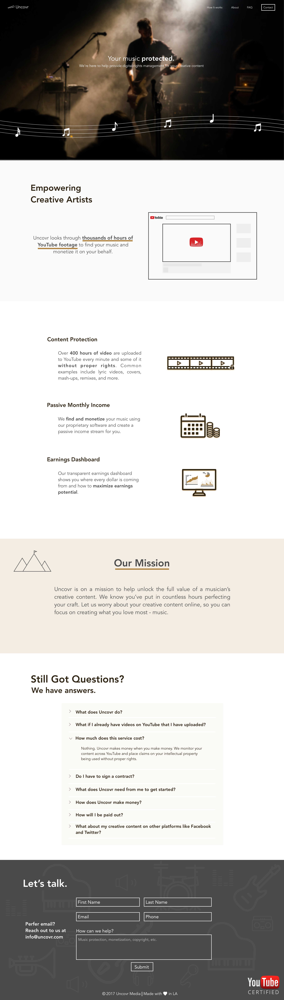
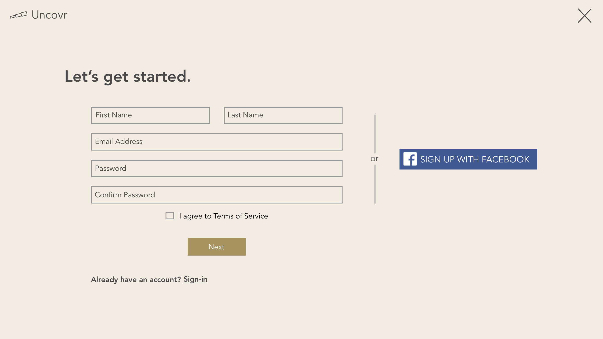
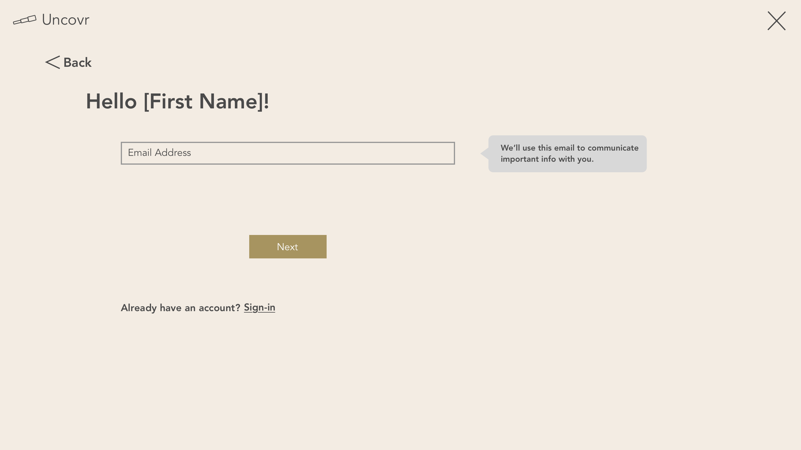
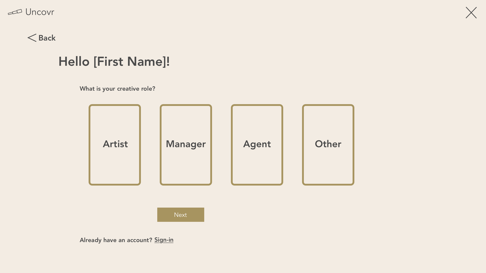
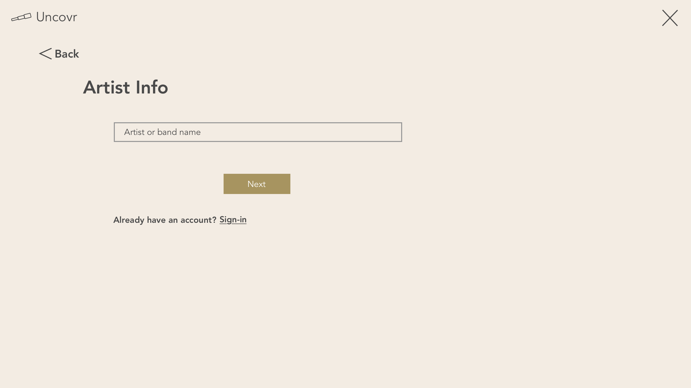
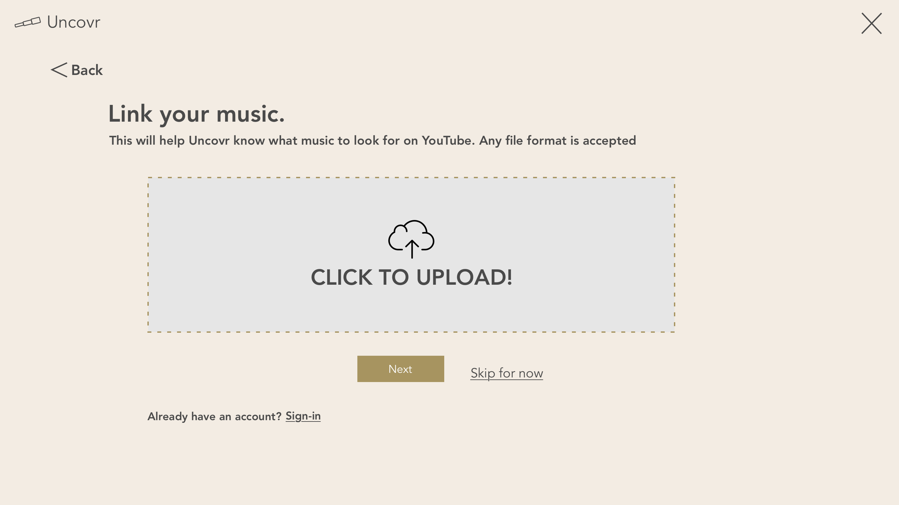
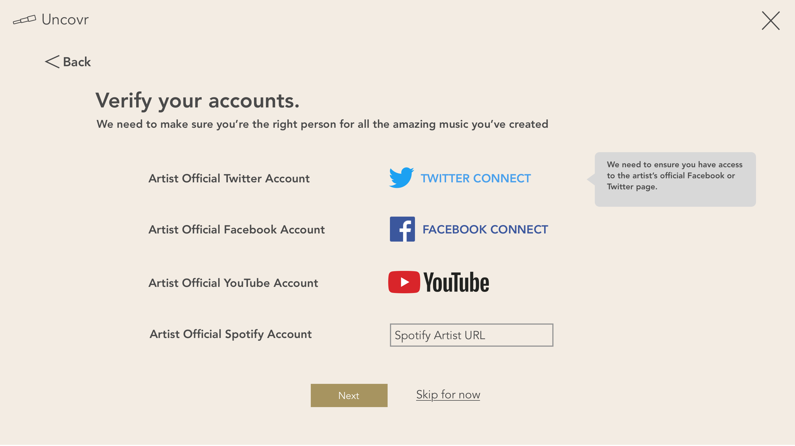
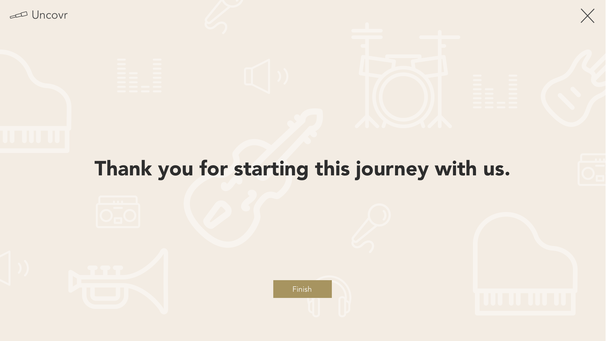

Idea
Uncovr was a service for artists that protects their creative content across YouTube. 300 hours of video are uploaded to YouTube every minute and some video content is bound to be used without seeking proper rights. This is where we came in.
Research
Having an education YouTube channel, I noticed one of my videos became much more viewed than the others. I wanted to see how other related videos stacked up against mine, so I performed a quick keyword search using the video title. I noticed that the length of my video was almost 7 minutes shorter than the next highest viewed video explaining the same concept. I also made the observation that another YouTube user re-uploaded the same video to their channel without consent and started running ads through YouTube's Partner Program.
I researched YouTube's copyright policies and found out that I needed to submit a formal takedown notice in order to remove the duplicate video. YouTube has a system in place called Content ID that allows large video content owners to upload their video files to database that scans it against all the videos uploaded to YouTube. This is a great tool, however; it is only available to a select few large video publishers on YouTube. An average YouTube user does not have knowledge or resources to properly protect their creative content on YouTube, so my college roommate and I decided to provide this service for them. We envisioned that the collective video library of YouTube users with low to medium channels sizes using our service would allow us to make use of the content ID tool that would be otherwise inaccessable to the majority of users in the YouTube Partner Program.
Case Study
After conducting research on what are the most common re-uploaded videos on YouTube, we determined the market for comedians, TV shows, and small artists to be the most promising for digital rights management. Every moment an artist neglects to protect their content on YouTube equates to ad-revenue loss and in some cases, altering of their creative content in an inferior manner.
Below is a list of videos that can be claimed and monetized on behalf of the original content creator.
Artist: London Grammar
Video Link: https://www.youtube.com/watch?v=K_Xtobf9jf4
A London Grammar fan overlayed the song "Hey Now" to his time lapse video. The band London Grammar would benefit from a content management service that would place a content ID claim on the video on their behalf, which would start to earn London Grammar ad revenue.
Artist: Russell Peters
Video Link: https://www.youtube.com/watch?v=Nn5jlrxcpkI
A YouTube user uploaded a set by comedian Russell Peters that has been viewed over 20 million times. At an estimated $2.50 ad revenue earned per 1,000 views, Russell's team missed out on the opportunity to earn $50K. A closer look shows that the video quality is very low and could even be taken down by submitting a formal cpoyright claim, which has the potential to encourage Russell Peters' fans to watch on his own YouTube channel or purchase the content.
SumIT Startup Accelerator
In May 2014, my college roommate and I applied to SumIT Startup Accelerator located in Saint Petersburg, Russia and we were very fortunate to be accepted. The program sends two UCLA student teams to ITMO University to participate in the SumIT Startup Accelerator, while student teams from ITMO University spend a summer with Startup UCLA. With the guidance of our mentors, Igor Kudinov and Andrei Sergeev, we developed our business model and customer development process based upon the methodologies of Steve Blank. We began actively reaching out to potential customers and testing our website sales funnel. During the weekends, we explored the city and saw amazing feats of architecture, some of which include Peter and Paul Fortress, St. Isaac's Cathedral, and Peterhof Palace.
At the end of our stay, we presented Uncovr to the students of ITMO University and Russian startup founders. The program was an invaluable experience that forged lasting relationships with entrepreneurs in St. Petersburg and shed light on how major cities across the world are becoming central hubs for technology and entrepreneurship.

Sign-up Flow







